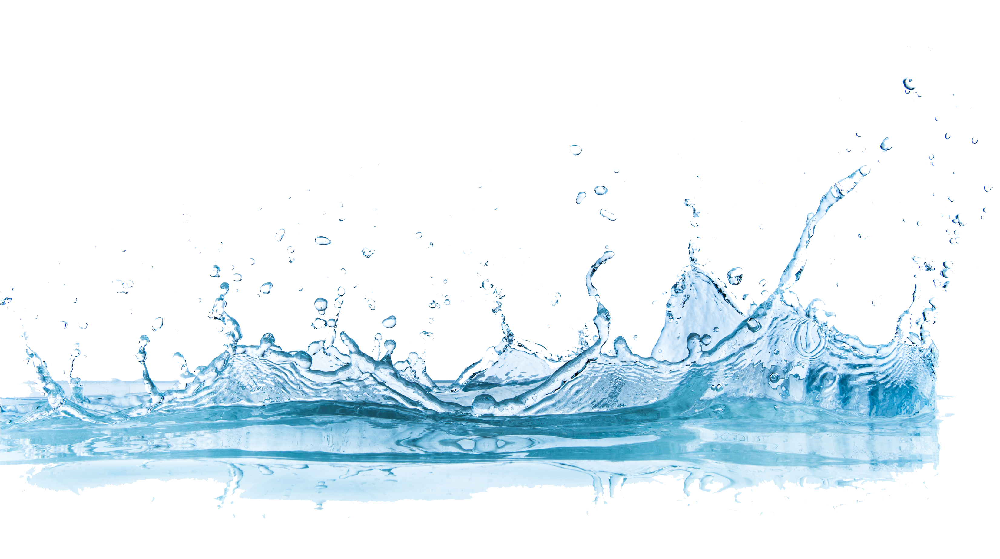

Poems I Stole from the Internet
Jagged Winter Trail Designs
The wagon and mule, Time and Eternity, stop to change places. Their lean and slope-back shadow, my reservation. The moon moves like infested flour. At the river, bloody victories meet bloody massacres. They tell each other about their dead. Grandmothers eat buffalo instead of hamburger. After supper, guitar chords bite through gravestone. Then the one grandfather interrupts, walking off with his own skull as a lantern into the polar night. Snowshoe hare cleans the ears of the sleeping and leaves prophetic dreams. It is quiet. One can hear the hair of the dead grow. The woods, itself, dressed in frozen children’s clothes. Few of the living disguise themselves as pawned beadwork.
Sugar Water in winter
A bowl of rose water dreams itself empty on the radiator: It's December and we can hardly afford the heat, our milk money crinkling hungry over the cold counter of our convenience store, the very last of our cash for creamer, for pleasantries, for cheap tea and cigarettes, for the barely- there scent of roses burning softly. We trade our hungers for hearth, for the clank and hiss of warmth. Small fires, these, but even we, in our clamorous poverty, demand pleasure: steal sugar, our neighbor's flowers, and never, ever are caught thankless in better weather.
White Lie
Christmas Eves our dad would bring Home from the farm real hay For the reindeer that didn't exist And after we were finally asleep Would get out and take the slabs Up in his arms and carry them Back to the bed of his pickup, Making sure to litter the snow With chaff so he could show us In the morning the place where They'd stood eating, their harness Bells dulled by the cold, their breath Steam, all while we were dreaming.
Might Have Been July, Might Have Been December
More oblique the eagle’s angle than the osprey’s precipitous fall, but rose up both and under them dangled a trout, the point of it all. Festooned, a limb on each one’s favored tree either side of the river, with chains of bone and lace of skin the river’s wind made shiver. Sat under them both, one in December, one in July, in diametrical seasonal airs, and once arrived home, as I remember, with a thin white fish rib lodged in my hair.